Polk County · Western North Carolina
Nestled in the Blue Ridge foothills, Tryon is a charming arts-and-equestrian town with a warm community, stunning scenery, and a pace of life that feels refreshingly human.
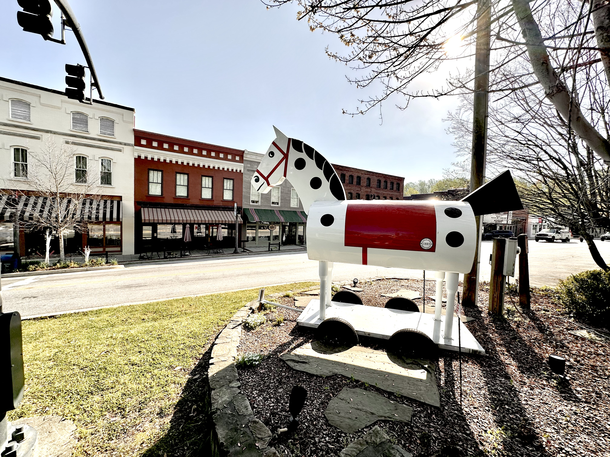
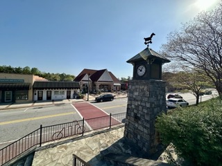
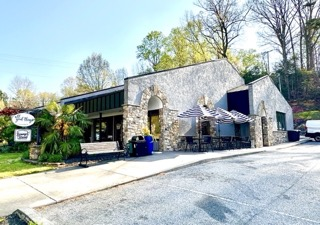
Tryon is the definition of intentional small-town living. Residents trade traffic jams for trail rides, chain restaurants for chef-owned bistros, and big-city noise for the sound of the Pacolet River. Life here is relaxed, creative, and deeply community-oriented.
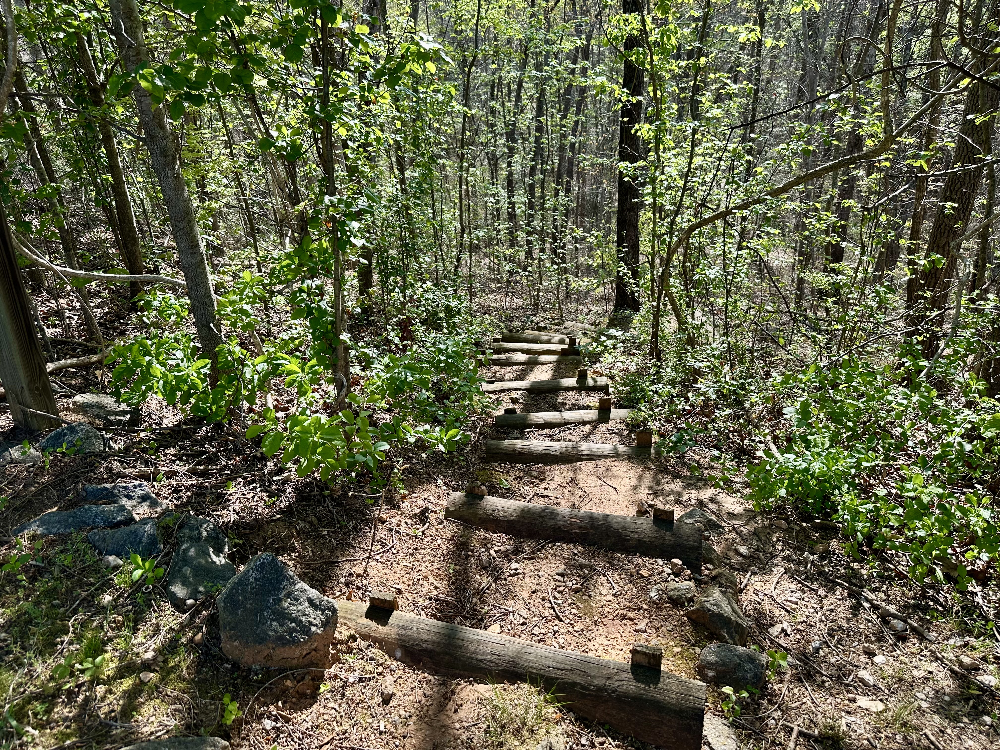
From sunrise hikes to afternoon kayaks on the Pacolet River, Tryon's natural setting is a daily invitation to slow down and breathe deeply.
F. Scott Fitzgerald stayed here. Nina Simone was born nearby. Tryon's creative DNA runs deep — and thrives brilliantly today.
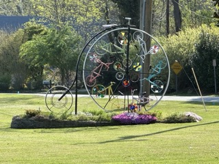
Neighbors wave from porches. Shopkeepers know your name. Life moves at a beautifully human speed.
Home of TIEC — one of the Western Hemisphere's premier venues. Horse-friendly trails throughout the region.
Farmers markets, local parades, civic pride — new neighbors are genuinely and warmly welcomed here.
Mild climate, walkable downtown, top healthcare nearby, arts & nature — everything you envisioned.
Trade Street is the beating heart of Tryon — walkable, charming, and full of independently owned gems. Here's where locals actually go.
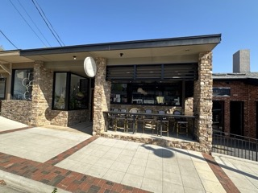
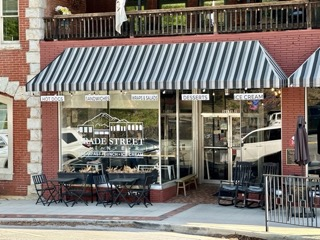
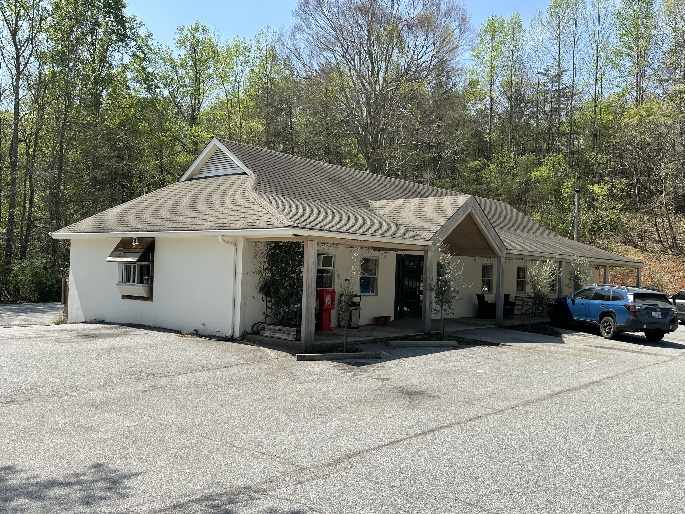
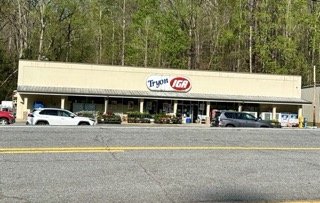
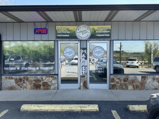
Everything you need to know before you move — schools, healthcare, parks, libraries, arts, and nature, all in one place.
Discover downtown Trade Street, local parks, equestrian venues, schools, and more — all within a charming, walkable community.
Trade St · walkable · cafés, galleries
117 Harmon Field Rd · 40+ acre park
3381 Hunting Country Rd · equestrian
101 Hospital Dr, Columbus · 24/7
34 Melrose Ave · theater & events
Tryon is no ordinary small town. Its history is rich, its identity distinct, and its future bright.
A rare geographic phenomenon keeps Tryon's temperatures unusually mild year-round — drawing health-seekers and retirees for over a century.
Equestrian since the early 1900s. TIEC is now one of the premier venues in the hemisphere — host to FEI World Equestrian Games.
F. Scott Fitzgerald stayed here. Nina Simone was born nearby. Writers, painters, and musicians have been drawn to Tryon for generations.
Named after William Tryon, colonial governor of NC (1765–1771). Settled by Scots-Irish pioneers. Polk County formed in 1855.
Trade Street takes its name from the frontier era — a historic crossroads for Cherokee trading routes and early Blue Ridge settlers.
Tryon's scenic mountain landscapes and historic architecture have attracted film and TV productions over the years.
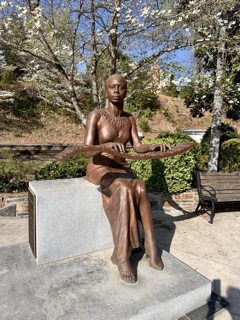
From walkable downtown blocks to private mountain estates and horse farm communities — Tryon and greater Polk County have a setting for every lifestyle.
Walkable, vibrant. Cafés, galleries, and Rogers Park all within a few blocks.
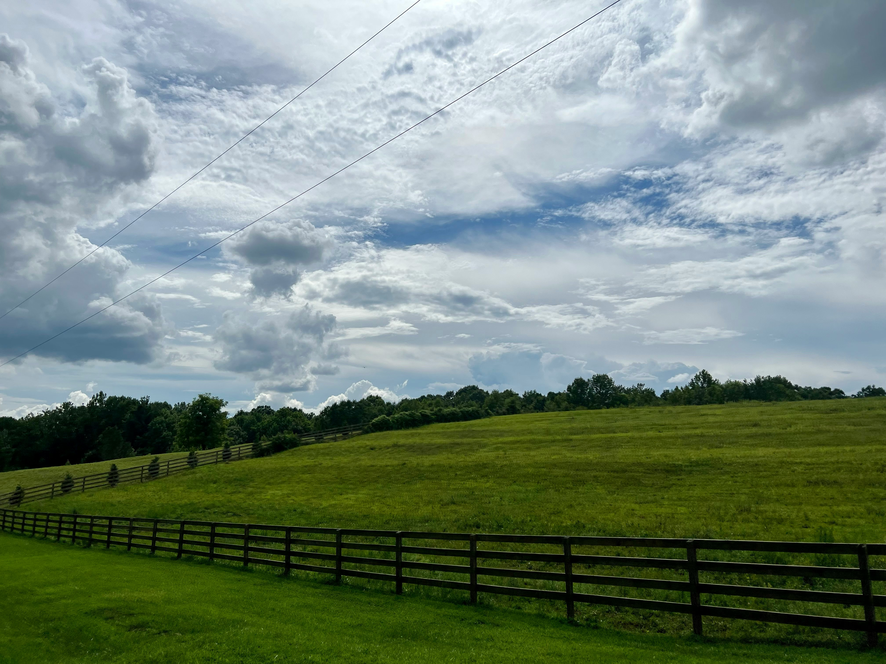
Adjacent to FENCE & TIEC. Horse properties and trail access right from your backyard.
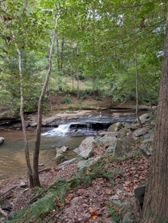
Mountain views, historic homes, quiet and private. Loved by artists and nature seekers.
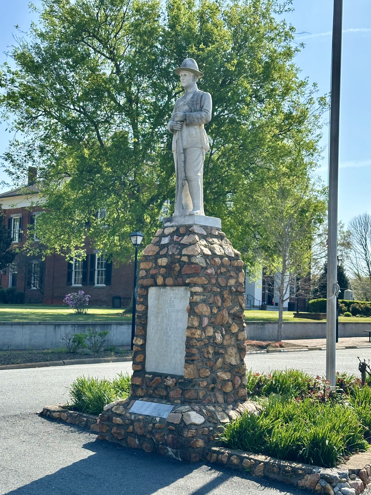
Larger lots, farmland, open countryside. Great value just 10–15 min from Tryon.
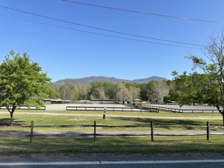
Family-friendly and walkable, with quick access to trails, schools, and community events.
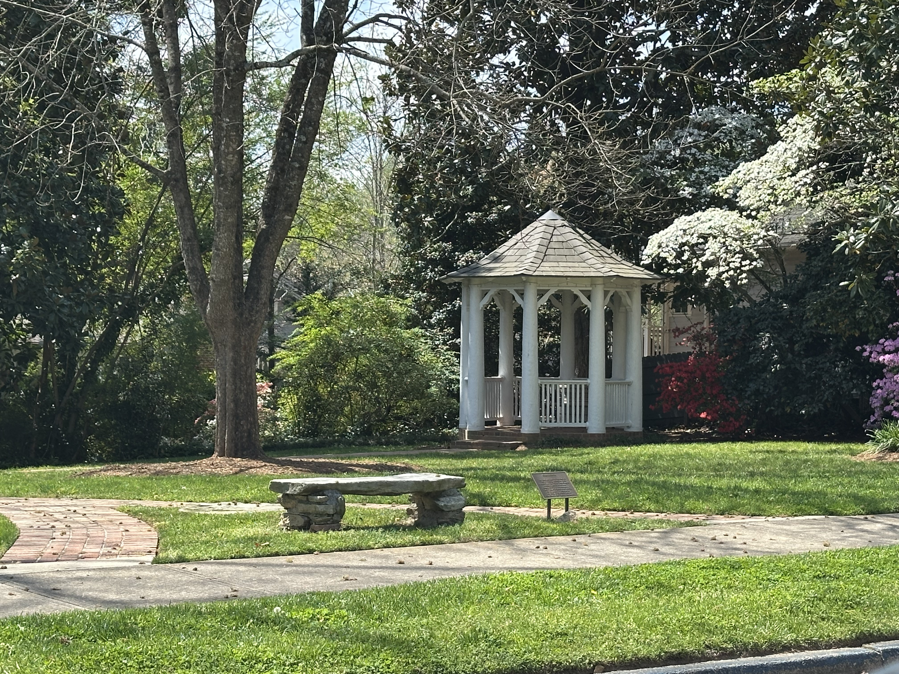
Elevated streets with panoramic Blue Ridge views. Historic cottages and newer builds.
Just like a great marriage, finding the right home is all about the perfect match. And Tabatha Cantrell has spent her career making sure every client — at every stage of life — finds exactly that.
A former top wedding professional turned real estate expert, Tabatha brings a rare combination of heart, intuition, and deep local knowledge to every transaction. She understands that a home isn't just a financial decision — it's one of life's most meaningful chapters. That's why she treats every client like a new friend, not just a transaction.
With more than 32 years as a proud Carolina resident, Tabatha has lived and worked across the Upstate of South Carolina and the mountains of Western North Carolina — including the Tryon and Polk County communities she now calls home territory.
Whether you're relocating, retiring, downsizing, or looking for your perfect Blue Ridge retreat — Tabatha knows this market inside and out. Let's find your perfect match.
Tabatha Cantrell · Real Broker LLC · (864) 504-9054 · Tcantrellrealestate@gmail.com
Your information will not be shared with third parties. Equal Housing Opportunity.